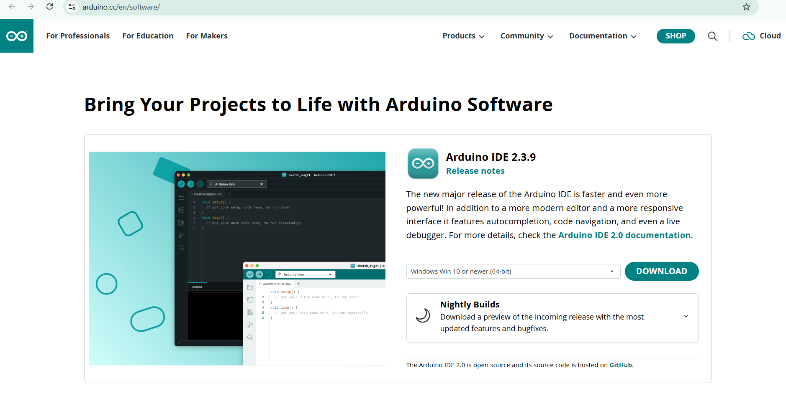
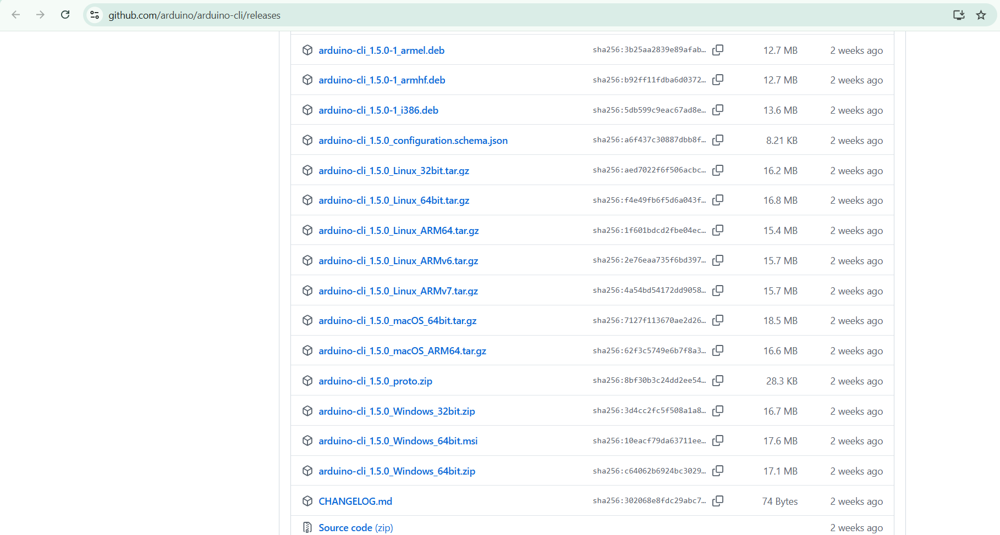

Arduino Tutorials feel free to explore
Learn Arduino from your first installation to real projects, hardware connections, programming, debugging and communication.
What You Will Learn
- How Arduino pins behave in real circuits
- How code controls hardware
- How to build projects step-by-step
- How Serial, I²C and SPI work
- How to troubleshoot hardware and code
How These Tutorials Work
- Start with the basics
- Follow each step in order
- Run the code yourself
- Compare your result with the expected result
- Use troubleshooting when something fails
Who This Is For
- Complete beginners
- Students
- Hobby makers
- Visual learners
Recommended Order
- Download
- Setup
- First Project
- Code Tutorials
- Hardware
- Serial Monitor
- Projects
- Problems & Notes
1. Download Arduino Tools
Before writing your first Arduino program, you need a way to create, compile and upload your code.
Arduino IDE Download
Download the Arduino IDE from the official Arduino website.
Find the Arduino IDE download section and select the version for your operating system.

Arduino CLI Download
Arduino CLI allows you to control Arduino projects from CMD, PowerShell or another terminal.
Download the package matching your operating system.

When You're Done
You should have Arduino IDE installed, Arduino CLI installed, or both if you want to learn both workflows.
2. Arduino IDE / CLI Setup
Now that the tools are installed, connect your Arduino and configure your computer so it can communicate with the board.
Connect the Arduino
Connect the Arduino to your computer using USB.
Configure the IDE
Open Arduino IDE and select your board from Tools → Board.
Then select the correct port from Tools → Port.
Test the CLI
Open CMD or Terminal and run:
arduino-cli versionFind the Arduino
arduino-cli board listInstall the Uno Core
arduino-cli core update-index
arduino-cli core install arduino:avrExpected Result
The IDE should recognize your board and the CLI should be able to detect it.
3. Your First Arduino Project
This is where everything comes together. You will connect an LED, write your first program and upload it to the Arduino.
Prepare the Board
Connect your Arduino to the computer.
In the IDE select your Arduino board and USB port.
Wire the LED
Connect the LED and resistor according to the wiring diagram used in the Arduino Guide LED Example.
The resistor limits the current through the LED.
Create the Sketch
Create a new Arduino sketch and enter:
void setup() {
// Set digital pin 13 as an output.
pinMode(13, OUTPUT);
}
void loop() {
// Turn the LED ON.
digitalWrite(13, HIGH);
// Wait for one second.
delay(1000);
// Turn the LED OFF.
digitalWrite(13, LOW);
// Wait for one second.
delay(1000);
}Upload and Compile
In Arduino IDE, press the Upload button to compile your sketch and send it to the Arduino.
With Arduino CLI, you normally use two commands: compile first, then upload.
arduino-cli compile --fqbn arduino:avr:uno blink
arduino-cli upload -p COM3 --fqbn arduino:avr:uno blinkHow the compile command works
arduino-cli compile --fqbn arduino:avr:uno blink
arduino-cli
tells the computer to use Arduino CLI.
compile
tells Arduino CLI to compile the sketch.
--fqbn
tells Arduino CLI which exact board to compile for.
FQBN means Fully Qualified Board Name.
arduino:avr:uno
is the FQBN for the Arduino Uno using the AVR platform.
blink
is the sketch folder containing your Arduino project.
For example, if your project is:
blink/
└── blink.ino
You run the command from the directory containing the
blink folder.
How the upload command works
arduino-cli upload -p COM3 --fqbn arduino:avr:uno blink
arduino-cli
tells the computer to use Arduino CLI.
upload
tells Arduino CLI to upload the compiled sketch to the board.
-p COM3
selects the serial port where the Arduino is connected.
Replace COM3 with the port shown for your Arduino.
--fqbn arduino:avr:uno
tells Arduino CLI that the target board is an
Arduino Uno.
blink
tells Arduino CLI which sketch you want to upload.
Compile vs Upload
These are two different operations.
- Compile — converts your Arduino code into a form the microcontroller can run.
- Upload — sends the compiled program to the Arduino.
You can think of it like this:
Arduino code
↓
compile
↓
Compiled program
↓
upload
↓
Arduino UnoFinding Your COM Port
On Windows, your Arduino may appear as something such as
COM3, COM4, or COM5.
You can check the available ports with:
arduino-cli board listThis command asks Arduino CLI to list connected boards and their detected ports.
Find your Arduino in the output and use its port with
-p.
Changing the Board
The FQBN changes depending on the board you are using.
For this tutorial we are using:
--fqbn arduino:avr:uno
If you use another board, you must use that board's FQBN instead.
This is why --fqbn is important: Arduino CLI needs to know
exactly which board it is compiling and uploading for.
Quick summary:
compile→ build the sketch.upload→ send it to the Arduino.--fqbn→ choose the board.-p→ choose the serial port.blink→ choose the sketch folder.
Watch the Result
The LED should turn ON for one second and OFF for one second.
🎉 You Made Your First Project
You have now completed the basic Arduino workflow:
- Connect hardware
- Write code
- Compile
- Upload
- Test
If It Does Not Work
- Check the selected board.
- Check the selected port.
- Check the USB cable.
- Check LED orientation.
- Check the resistor and wiring.
- Try uploading again.
4. Blink Code Tutorials
Now that your first project works, start changing the program and learn how Arduino code controls hardware.
Change Blink Speed
The delay() function controls how long Arduino waits.
void loop() {
// Turn the LED ON.
digitalWrite(13, HIGH);
// Wait 200 milliseconds.
delay(200);
// Turn the LED OFF.
digitalWrite(13, LOW);
// Wait another 200 milliseconds.
delay(200);
}Result
The LED now blinks much faster.
Multiple LEDs
Connect LEDs to pins 8, 9 and 10.
void setup() {
// Set pin 8 as an output.
pinMode(8, OUTPUT);
// Set pin 9 as an output.
pinMode(9, OUTPUT);
// Set pin 10 as an output.
pinMode(10, OUTPUT);
}
void loop() {
// Turn LED on pin 8 ON.
digitalWrite(8, HIGH);
// Turn LED on pin 9 OFF.
digitalWrite(9, LOW);
// Turn LED on pin 10 ON.
digitalWrite(10, HIGH);
// Keep this pattern for 500 milliseconds.
delay(500);
}5. Serial Monitor
Serial communication lets Arduino send information back to your computer. It is one of the most useful tools for debugging projects.
First Serial Output
void setup() {
// Start serial communication at 9600 baud.
Serial.begin(9600);
}
void loop() {
// Send text to the Serial Monitor.
Serial.println("Hello Arduino");
// Wait one second before sending it again.
delay(1000);
}Open Serial Monitor and set the baud rate to 9600.
Expected Result
You should see:
Hello Arduino
Hello Arduino
Hello ArduinoRead an Analog Sensor
void setup() {
// Start serial communication at 9600 baud.
Serial.begin(9600);
}
void loop() {
// Read the analog value from pin A0.
int value = analogRead(A0);
// Send the value to the Serial Monitor.
Serial.println(value);
// Wait half a second before reading again.
delay(500);
}This continuously reads A0 and sends the value to the computer.
6. Second Project — OLED + Joystick Game
You already know the basic Arduino concepts. Now you can combine different parts together and build something that behaves like a real project.
What We Are Building
In this project we will make a small game using an OLED display and a joystick.
The joystick controls a player on the OLED screen. The goal can be as simple as reaching an object, avoiding an obstacle, or collecting points.
The important part is not making a huge game. The important part is learning how several parts of Arduino code can work together.
Hardware
- Arduino Uno
- OLED display
- Joystick module
- Breadboard
- Jumper wires
- USB cable
Use the Hardware Visual page when you need help identifying the pins and wiring.
On an Arduino Uno, the usual I²C pins are:
- A4 — SDA
- A5 — SCL
Check the voltage requirements of your particular OLED module before connecting VCC.
Read the Joystick
void setup() {
Serial.begin(9600);
}
void loop() {
int x = analogRead(A0);
int y = analogRead(A1);
Serial.print("X: ");
Serial.print(x);
Serial.print(" Y: ");
Serial.println(y);
delay(100);
}This is a good first test before making the game. Move the joystick and watch the values change in the Serial Monitor.
Build the Game
Once the joystick works and the OLED works, combine them.
A simple game can work like this:
- The player starts in the middle of the screen.
- The joystick moves the player.
- An object appears somewhere on the screen.
- Touching the object gives you a point.
- The object moves to a new position.
You can then add your own rules, enemies, sounds, menus, levels, lives, timers, or anything else you want.
Don't Copy the Project Forever
This project is meant to teach you how to combine hardware and code. Once you understand it, start changing it.
Change the player, change the controls, change the goal, add buttons, add a buzzer, or turn it into a completely different game.
From this point onward, the projects do not have to come from the guide. You can start creating your own.
7. New Project — Create Your Own
At this point you have learned enough to start making projects without following a tutorial step by step.
Start With an Idea
Think of something you would like Arduino to do.
It does not need to be complicated. A project can start with one LED, one button, or one sensor.
For example:
- A reaction-time game
- An automatic night light
- A temperature display
- A small alarm
- A digital dice
- A traffic light
- A distance warning system
- A sensor monitor
Build It in Pieces
Do not try to write the entire project at once.
Test each part separately first.
- Make the LED work.
- Make the button work.
- Make the sensor work.
- Make the display work.
- Then combine them.
This makes finding problems much easier.
Use the Guide When You Get Stuck
You do not need to remember every pin, command, or wiring diagram.
The Arduino Guide is also a reference. Come back whenever you need an answer.
Need to know what pin 11 does? Check the hardware reference.
Need an example? Check the examples.
Need wiring? Open Hardware Visual.
Your Project Does Not Have to Match Anyone Else's
There is no single correct project.
Two people can use the same Arduino and make completely different things.
Change the code. Change the hardware. Combine examples. Add your own ideas.
The goal is not to finish another tutorial. The goal is to make something yourself.
Start Making
When you have an idea, these tools can help you get started:
8. More Projects — What Can You Build?
Arduino can be used for much more than blinking LEDs. Once you know the basics, you can combine code, sensors, displays, motors, buttons, and other hardware to create your own systems.
Lights and LEDs
- Automatic lights
- Traffic lights
- LED indicators
- Light effects
- RGB lighting systems
Displays
- Digital clocks
- Temperature displays
- Sensor dashboards
- Menus
- Game screens
- Information displays
Sensors
- Temperature monitors
- Light sensors
- Distance sensors
- Motion detectors
- Sound detection
- Environmental monitors
Games
- Reaction games
- Joystick games
- Button games
- OLED games
- Score systems
- Simple menus
Motors and Machines
- Servo projects
- Motor controllers
- Robotic mechanisms
- Automatic systems
- Moving sensor systems
Larger motors and other high-current devices may require a suitable driver, transistor, MOSFET, external power supply, or other circuitry. Do not connect high-current loads directly to an Arduino pin.
Communication
- Serial projects
- I²C devices
- SPI devices
- Bluetooth projects
- Wireless projects
- Communication between controllers
Combine Everything
The most interesting projects can combine several categories.
For example:
- Joystick + OLED + buzzer → a small game
- Sensor + OLED + LEDs → a monitoring station
- Button + display + sensor → an information system
- Sensor + motor → an automatic machine
You are no longer limited to the examples in this guide. You can combine them and create something completely new.
Your Tools
Once you are ready to start building, use the rest of the guide as your workshop.
There Is No Final Project
This is where the tutorial path stops being about following lessons.
Keep experimenting. Keep changing your code. Build something useful, something fun, or something nobody else has made before.
And when you forget something, come back to the guide and look it up.
9. Quick Wiring Guide
Before moving into larger projects, learn the basic connection patterns used by common Arduino components.
LED Wiring
- Arduino pin → resistor
- Resistor → LED positive leg
- LED negative leg → GND
Button Wiring
- Connect the button to a digital input.
- Use an appropriate pull-up or pull-down configuration.
- Read the button state using
digitalRead().
Sensor Wiring
- VCC → appropriate power pin
- GND → Arduino GND
- Signal → appropriate Arduino input
⚠ Important
Never assume that every module uses 5V. Check the component's required voltage before connecting it.
10. Notes & Troubleshooting
When a project does not work, do not immediately change everything. Check one part at a time.
Hardware Problems
- Check GND connections.
- Check component orientation.
- Check resistor values.
- Check the selected pins.
- Check the USB connection.
Upload Problems
- Check the selected board.
- Check the selected port.
- Close other programs using the serial port.
- Reconnect the Arduino.
- Try uploading again.
Code Problems
- Check spelling.
- Check brackets.
- Check semicolons.
- Check pin numbers.
- Read the compiler error from the beginning.
Debugging Rule
Change one thing at a time. If you change the wiring, code and board configuration simultaneously, it becomes much harder to find the actual problem.